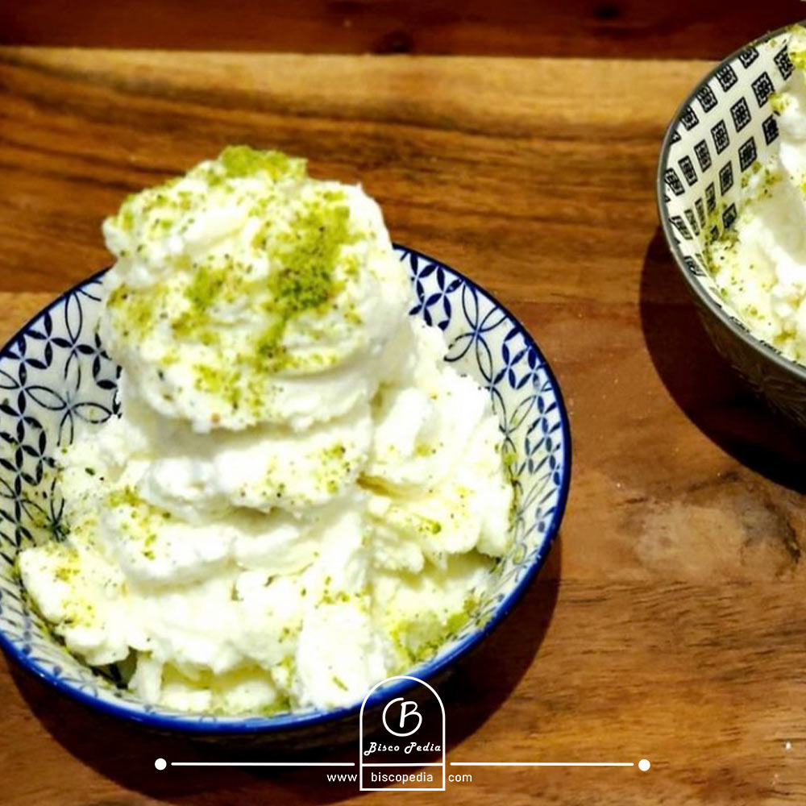
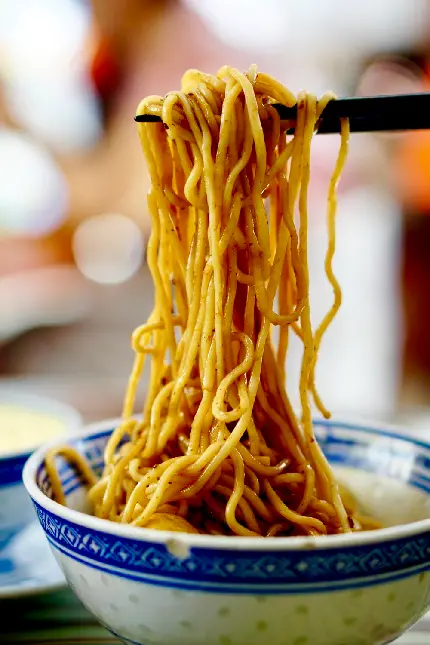

All Recipes
-
Qabili palau

A triditional Afghan rice dish made with lamb, carrots, and raisins.
Average Rating: 4.5/5
-
Shir Yakh (Afghan Ice cream)
A triditional Afghan frozen dessert made with milk, sugar and cardemom.
Average Rating: 4.8/5
Noodle
A quick and tasty dish made with boiled noodles, vegetales and spices .
Perfect for busy days!
Average Rating: 4.5/5